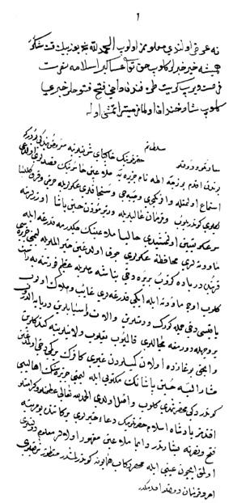

Belge 6: TKSA E.7002/24, veziriâzam ‘arzı
Belge 6
Özet:
Venedik’in Bozca-Ada’ya saldırısının duyulması üzerine müezzîn yeniçeri ve cebeci askeri ve bazı sancakbeyleri kuvvetlerine Hüseyin Paşa atanmış, Venedik donanması Limni civarında fırtınada kayba uğramış, çekilip gitmişler “ancak Boğaz’da olan gemilerden gayrı kâfirin bir gemi(si) dahi olmadığını” Hüseyin Paşa bildirdi. Mektubu gönderildi.
H. H. özet:
Yüz bin kere şükür. Girit’ten de fetih haberleri geldi.
Yorum:
Hüseyin Paşa’nın seraskerliği ve Venedik donanmasının Limni yakınında fırtınaya tutulması: Naîmâ (İpşirli yayını, III, s. 1229–1230), tarih: 1059, II, Cumâda/Haz. 1649.